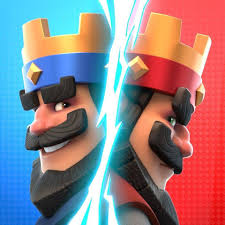

O Clash Royale

Saiba mais aqui (wikipedia)
Melhor carta na minha humilde opinião: Mega-Cavaleiro.
Por que? Simplesmente por ele ter muita vida (3993), muito dano (no pulo 537), dano em
area (268), porém, não é apenas jogar essa carta até porque precisa-se de um deck bom ou
com sinergia (quanto maior for a sinergia melhor) ou seja precisa saber jogar algo que
muitos não sabem
Nascimento
O CLash Royale nasceu/lançou no dia 2 de março de 2016 e foi uma febre desde que lançou
e era algo tão inovador que ouveram muitos videos de "é possivel vencer o botão cancelar
no clash royale? tentei e olha no que deu". Veja o vídeo clicando
aqui